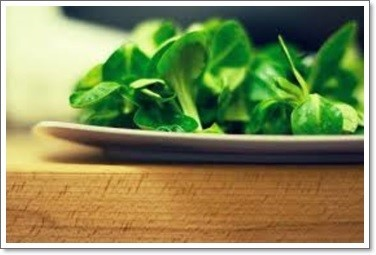
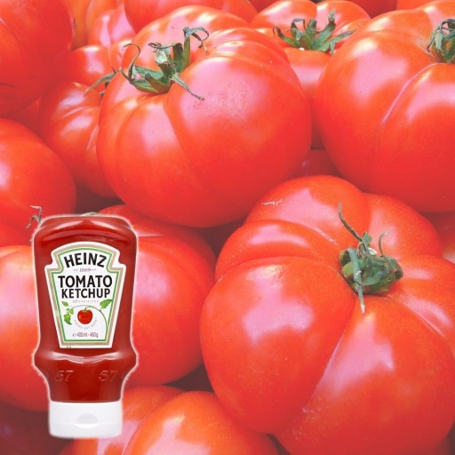
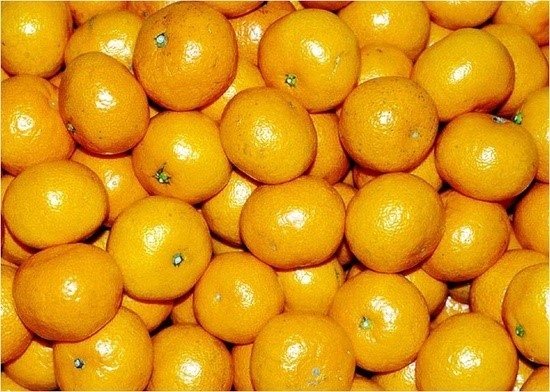

초록색 식품은 우리의 몸과 마음을 편안하게 해준다. 특히 초록색 과일과 야채에는 풍부한 엽록소가 들어있어 신진대사를 원활하게 해주고, 피로를 풀어주며, 신체의 자연 치유력을 높여 준다. 매실, 브로컬리, 시금치, 녹차 등이 대표 식품이다.
빨간색을 띠는 식품은 활력을 북돋우고 무기력과 피로를 해소해 준다. 또한 심장을 맑고 튼튼하게 해주며 혈액순환을 도와준다. 과일과 채소의 붉은색에는 리코펜과 안토시아닌이 들어 있는데, 이들 영양소는 피를 맑게 하고 식욕을 돋우는 작용을 한다. 딸기, 토마토, 수박, 홍고추, 사과, 팥 등이 대표 식품이다.
노란색 과일과 야채에 함유된 카로티노이드 성분은 항암 효과와 함께 천연 변비약으로서 몸에 쌓이는 독성을 제거하는 기능을 한다. 또한 비장과 위장의 기능을 복돋워주고 소화력 증진과 성인병 예방에 도움을 준다. 당근, 바나나, 오렌지, 단호박, 고구마 등이 대표 식품이다.
| 그린 푸드 | 레드 푸드 | 엘로 푸드 | |
|---|---|---|---|
| 주요성분 | 클로로필 | 카로티노이드 | 라이코펜, 안토시아닌 |
| 효능 | 간 건강 효과, 암 예방 | 항암효과, 면역력 증가, 혈관 강화 | 항암 작용, 노화 예방, 면역 기능 향상 |
| 식품예시 |  잎채소, 녹차, 오이, 샐러리 등 |
 사과, 토마토, 체리, 고추, 비트 등 |
 호박, 고구마, 살구, 오렌지, 옥수수 등 |